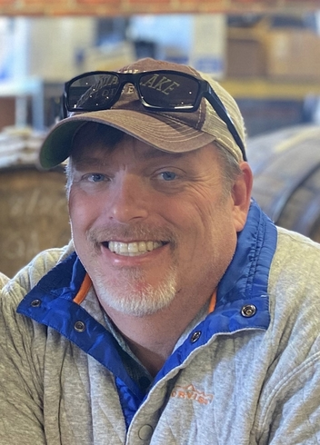
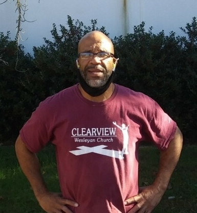
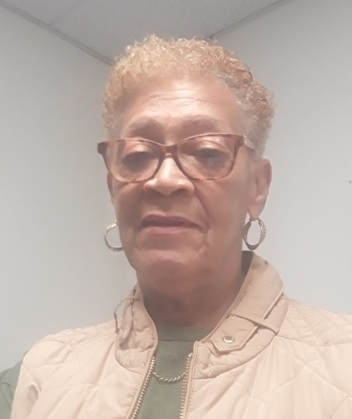
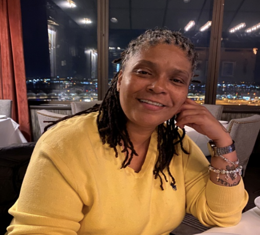
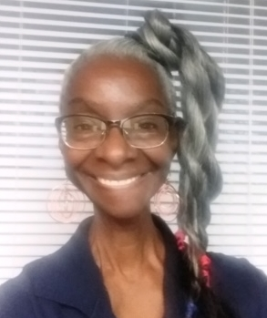
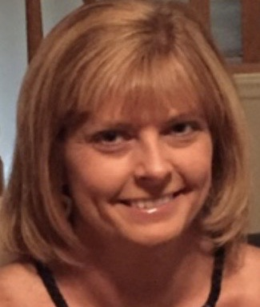

John Luther  |
Substance Abuse Case Manager | John Luther started with the Community Recovery Program in April 2015. He brought his experience from working as a case manager at Trinity Support Services and from working at the Department of Corrections. John serves as a case manager and employment specialist at CRP and uses his training and knowledge to help individuals locate employment and find available treatment options. He assists the participants with providing support to help in their path to recovery. | John Luther started with the Community Recovery Program in April 2015. John serves as a case manager and employment specialist at CRP and uses his training and knowledge to help individuals locate employment and find available treatment options. He assists the participants with providing support to help in their path to recovery. | John Luther serves as a case manager and employment specialist at CRP and uses his training and knowledge to help individuals locate employment and find available treatment options. He assists the participants with providing support to help in their path to recovery. |
Dwight Penn  |
House Manager | Dwight Penn is the house manager at The Landing, a recovery residence with CRP. In this position, he provides support and guidance to the residents. In addition to his position at The Landing, he is employed at Drake Extrusion. Dwight has a goal of becoming a peer support specialist and eventually, working at Piedmont Community Services. Dwight is an excellent communicator an is grateful for his recovery journey. | Dwight Penn is the house manager at The Landing, a recovery residence with CRP. He provides support and guidance to the residents. In addition to his position at The Landing, he is employed at Drake Extrusion. Dwight has a goal of becoming a peer support specialist and eventually, working at Piedmont Community Services. Dwight is an excellent communicator an is grateful for his recovery journey. | Dwight Penn is the house manager at The Landing, a recovery residence with CRP. In this position, he provides support and guidance to the residents. Dwight has a goal of becoming a peer support specialist and is grateful for his recovery journey. |
Irma Preston  |
Transportation Specialist | Irma Preston is employed at CRP as the transportation specialist. As the transportation specialist, Irma provides transportation support by providing the individuals with transportation to interviews, appointments, and jobs. While transporting, Irma uses her excellent communication skills to provide the participants with hope and encouragement as they make major life changes of reframing from drug use and re-entering the workforce. Irma is a retired correctional officer and court security officer with the Henry County Sheriff’s Department. | Irma Preston is employed at CRP as the transportation specialist. She provides the individuals with transportation to interviews, appointments, and jobs. While transporting, Irma using her excellent communication skills to provide the participants with hope and encouragement as they make major life changes of reframing from drug use and re-entering the workforce. | Irma Preston is employed at CRP as the transportation specialist and provides transportation support by providing the individuals with transportation to interviews, appointments, and jobs. |
Viola Rich  |
Peer Support Specialist | Viola Rich joined the Community Recovery Program in August 2020 after several years of working for Public Partnership. She works as one of the peer recovery specialists and has been trained to support individuals who struggle with substance use, mental health, or psychological trauma. She is the coordinator of the Occupational Training Program (OPT) that helps train individuals to learn job responsibilities and skills. She helps participants in their paths to recovery by leading various activities and programs at the Peer Recovery Center. Viola became a certified peer support specialist in September 2017 and has been active in her recovery since February 2016. In January 2020, Viola started a women’s recovery support group that is geared towards women empowering, supporting, and learning to trust each other in their journey of recovery. She received her Digital Peer Support Certification in April 2020 and has also completed training in Career Coaching and LGBTQ Recovery Resources. | Viola Rich joined the Community Recovery Program in August 2020 and works as one of the peer recovery specialists and has been trained to support individuals who struggle with substance use, mental health, or psychological trauma. She is the coordinator of the Occupational Training Program (OPT) that helps train individuals to learn job responsibilities and skills. Viola has been active in her recovery since February 2016. In January 2020, Viola started a women’s recovery support group that is geared towards women empowering, supporting, and learning to trust each other in their journey of recovery. She has also completed training in Career Coaching and LGBTQ Recovery Resources. | Viola Rich works as one of the peer recovery specialists and is the coordinator of the Occupational Training Program (OPT) that helps train individuals to learn job responsibilities and skills. In January 2020, Viola started a women’s recovery support group and has also completed training in Career Coaching and LGBTQ Recovery Resources. |
Jacqueline "Jackie" Scales  |
Peer Support Specialist | Jackie Scales has been a peer support specialist with CRP since 2018. As a peer support specialist she provides one-on-one peer mentoring, support on recovery related activities, and guidance on developing a wellness plan and a relapse prevention plan. She provides support to the ladies and to the men who resident in the recovery residential program. In addition to the supporting the individual enrolled in CRP, she facilitates the recovery group at the Franklin County Jail to the inmates enrolled in the Bridging the Gap program. Jackie uses her training as a Certified Wellness Recovery Action Plan (WRAP) to assist individuals who attend the Pathways to Recovery Center. | Jackie Scales has been a peer support specialist since 2018. She provides one-on-one peer mentoring, support on recovery related activities, and guidance on developing a wellness plan and a relapse prevention plan. She provides support to the ladies and to the men who resident in the recovery residential program. | Jackie Scales works as peer support specialist, and provides one-on-one peer mentoring, support on recovery related activities, and guidance on developing a wellness plan and a relapse prevention plan. She provides support to the ladies and to the men who resident in the recovery residential program. |
Lisa Smith  |
Program Manager | Lisa Smith has over twenty years of experience working in the human services field, specifically working with individuals struggling with substance use and criminal histories. She has been employed with Piedmont Community Services since 2011 as the CRP program manager. Prior to employment with PCS, she was an adult probation and parole officer with the Virginia Department of Correction for 12 years. Through mentorships and collaboration with community partners and under Lisa’s leadership, CRP hwas developed into the program it is today. Lisa truly believes that people can and do recovery from substance use disorder. | Lisa Smith has over twenty years of experience working in the human services field, and has been employed with Piedmont Community Services since 2011 as the CRP program manager. Through mentorships and collaboration with community partners and under Lisa’s leadership, CRP has developed into the program it is today. Lisa truly believes that people can and do recovery from substance use disorder. | Lisa Smith has been employed with Piedmont Community Services since 2011 as the CRP program manager. Through mentorships and collaboration with community partners and under Lisa’s leadership, CRP has developed into the program it is today. |
Michele Whitlow  |
Services Coordinator | Michele Whitlow joined the Community Recovery Program in October 2018 after serving as a probation office for 18 years. Michele is the service coordinator. In this position, she assists individuals in obtaining and maintaining employment and she collaborates with community resources. Additionally, Michele facilitates job readiness workshops for the individuals enrolled in CRP and for individuals who are incarcerated as part of the Bridging the Gap program with Franklin County Jail. Michele uses her knowledge, skills, and training as a probation and parole officer to assist individuals as they travel the road of recovery in becoming productive members of the community. | Michele Whitlow joined the Community Recovery Program in October 2018 and works as the service coordinator. She assists individuals in obtaining and maintaining employment and she collaborates with community resources. Additionally, Michele facilitates job readiness workshops for the individuals enrolled in CRP. Michele uses her knowledge, skills, and training as a probation and parole officer to assist the individual as they travel the road of recovery in becoming productive members of the community. | Michele Whitlow works as the service coordinator and assists individuals in obtaining and maintaining employment and she collaborates with community resources. Additionally, Michele facilitates job readiness workshops for the individuals enrolled in CRP. |